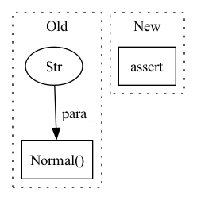

Pattern ID :39644
Before Change
)
with pm.Model(rng_seeder=456) as m:
pm.Normal("x" , mu=0, sigma=1)
result1 = sample_numpyro_nuts(**sample_kwargs)
with pm.Model(rng_seeder=456) as m:
pm.Normal("x", mu=0, sigma=1)After Change
all_equal = np.all(result1.posterior["x"] == result2.posterior["x"])
if random_seed is None:
assert not all_equal
else:
assert all_equal
In pattern: SUPERPATTERN
Frequency: 3
Non-data size: 2
Instances Fragment ID: 112723836
Project Name: pymc-devs/pymc3
Commit Name: cee2b306f5c7df14f6f20a2007d56bc5eda8795e
Time: 2022-05-24
Author: ricardo.vieira1994@gmail.com
File Name: pymc/tests/test_sampling_jax.py
M Class Name: AnonimousClass
N Class Name: AnonimousClass
M Method Name: test_seeding(3)
N Method Name: test_seeding(2)
M Parent Class:
N Parent Class:
M File Name: pymc/tests/test_sampling_jax.py
N File Name: pymc/tests/test_sampling_jax.py
M Start Line: 212
M End Line: 228
N Start Line: 211
N End Line: 230
Before Change
@pytest.mark.parametrize("postprocessing_backend", [None, "cpu"])
def test_idata_kwargs(sampler, idata_kwargs, postprocessing_backend):
with pm.Model() as m:
x = pm.Normal("x" )
y = pm.Normal("y", x, observed=0)
pm.ConstantData("constantdata", [1, 2, 3])
pm.MutableData("mutabledata", 2)
idata = sampler(After Change
assert "log_likelihood" not in idata
x_dim_expected = idata_kwargs.get("dims", model_test_idata_kwargs.RV_dims)["x"][0]
assert idata.posterior.x.dims[-1] == x_dim_expected
x_coords_expected = idata_kwargs.get("coords", model_test_idata_kwargs.coords)[x_dim_expected]
assert list(x_coords_expected) == list(idata.posterior.x.coords[x_dim_expected].values) Fragment ID: 112723837
Project Name: pymc-devs/pymc3
Commit Name: 2a9e86c641ccd2d8da87268eefc3bbb72d21fbe5
Time: 2022-07-17
Author: 108834862+bherwerth@users.noreply.github.com
File Name: pymc/tests/test_sampling_jax.py
M Class Name: AnonimousClass
N Class Name: AnonimousClass
M Method Name: test_idata_kwargs(4)
N Method Name: test_idata_kwargs(3)
M Parent Class:
N Parent Class:
M File Name: pymc/tests/test_sampling_jax.py
N File Name: pymc/tests/test_sampling_jax.py
M Start Line: 172
M End Line: 176
N Start Line: 187
N End Line: 208
Before Change
def test_idata_kwargs(sampler, idata_kwargs, postprocessing_backend):
with pm.Model() as m:
x = pm.Normal("x")
z = pm.Normal("z" )
y = pm.Normal("y", x, observed=0)
idata = sampler(
tune=50,
draws=50,After Change
postprocessing_backend=postprocessing_backend,
)
assert "constantdata" in idata.constant_data
assert "mutabledata" in idata.constant_data
if idata_kwargs.get("log_likelihood", True):
assert "log_likelihood" in idata Fragment ID: 112723842
Project Name: pymc-devs/pymc3
Commit Name: 403f2d542878f4745e9c0bc15db18219524ce6a7
Time: 2022-06-20
Author: danh.phan.mq@gmail.com
File Name: pymc/tests/test_sampling_jax.py
M Class Name: AnonimousClass
N Class Name: AnonimousClass
M Method Name: test_idata_kwargs(3)
N Method Name: test_idata_kwargs(3)
M Parent Class:
N Parent Class:
M File Name: pymc/tests/test_sampling_jax.py
N File Name: pymc/tests/test_sampling_jax.py
M Start Line: 174
M End Line: 174
N Start Line: 175
N End Line: 185